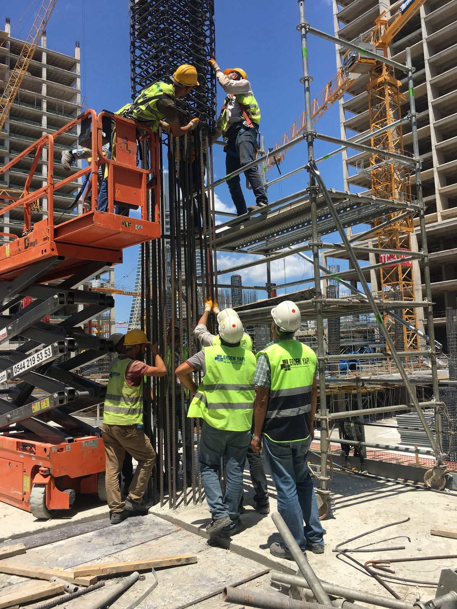

PPE Requirements
Anyone entering the worksite must wear hard hats and safety belts where required. Safety goggles and gloves are required when welding, grinding, or cutting.
Safety First
Safety is handled through meetings, PPE rules, signboards, supervised electrical work, fire protection, and controlled site behavior.

Anyone entering the worksite must wear hard hats and safety belts where required. Safety goggles and gloves are required when welding, grinding, or cutting.
Directional signboards and emergency exit signs are placed to guide movement and support emergency response.
Fire extinguishers must be provided and kept readily available, especially around welding, cutting, and spark-producing work.
Temporary and permanent electrical wiring tasks are performed only under the supervision of skilled technicians.
The project manager manages construction operations step by step according to project scope, technical specification, site condition, and authorized procedures. The objective is to maintain continuity, reduce risk, and keep the site team aligned.
Safety meetings and site briefings keep workers aware of hazards, work zones, equipment movement, and required precautions.
Signboards, emergency exits, barriers, and worksite directions help keep movement predictable and reduce avoidable risk.
Electrical, welding, cutting, and height-related activities are managed with supervision, protective equipment, and permission controls.